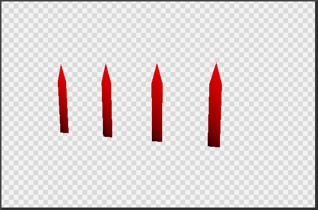

Amplification & Mesh Shaders
Exploring the power and usecases of amplification- and mesh-shaders.
In this case to render wasteful amounts of terrain and foliage.

Mesh shader, and by extension amplification shaders, are a more often than not overlooked alternative to the regular geometry pipeline, and hold some distinct but rather tricky-to-utilize advantages. With this test, we wanted to see how they work, how easy they are to implement, and to note which gotchas they have.
Theory:
These shaders work almost exactly like compute shaders, where a
set number of threads are defined, which is then scaled on the
CPU’s side via launching thread groups. The first and foremost
difference lies in the fact that you can define output geometry
data from these threads. This comes with a lot of caveats but
still, that’s super neat!
First and foremost, you must consider the limits of your individual
thread groups, we can’t just output infinite geometry, after all. At
the end of the day, there are still physical limits to our GPUs,
and in this case that is in the array size of 256 verts and 256 prims.
Besides this, the total output data size must not eclipse 32kb in
the mesh shader, nor 16kb for the amplification shader, and
combined, these must not exceed 47kb either. This is per instance
(thread group), of course.
With that out of the way, let’s discuss how these two shaders work together. The mesh shader itself is a replacement for the whole geometry pipeline, replacing your: input assembler, vertex shaders, geometry shaders, hull shaders, and domain shader. Only from the rasteriser onwards does the traditional pipeline kick back in. The amplification shader is an optional step that can be launched before the mesh shaders. It exists so the user can prepare data and properly allocate the correct number of thread groups. Each thread group has one amplification shader, but this can spawn many mesh shader thread groups. This is done via the “DispatchMesh” function, which is groupshared and must be uniformly called.

Why would you ever need to do this though? Well, it can,
for example: allow you to do occlusion querying on the GPU,
or spawn multiple instances, i.e. allocate dynamic amounts of
work and still efficiently utilise shader occupancy. This
is further aided by the “SetMeshOutputCounts” in the mesh shader,
which tells the rasteriser beforehand how much memory to allocate,
improving performance.
All of this is quite important since these types of shaders are
not very good at doing asynchronous work. So, you must launch
as much of it in one go as possible to properly utilise your
performance. Not to mention the concept of the geometry engine
and the localizing of indices and vertices.
In short, for each thread group you define your vertices and
indices locally, rather than as you would for a regular mesh. Now
over many years, programmers have worked to make mesh compilers
good at ordering this stuff, so that you have the least
possible duplicate data, but also the least possible duplicate
data in these thread groups. This is important, as it would impact the
rasteriser’s performance otherwise, having to shade
more verts or indices. But us assembling this stuff on
the fly, of course, doesn’t keep these optimisations in mind.
That’s why it is important to read up on the geometry engine
and its optimal functioning.
In conclusion, theory wise, very cool! But it has really
only proper use-cases for systems of scale: grass rendering,
terrain, etc... Due to the lack of parallelisation.
Implementation:
Phew, after a book worth of incomplete theory, I do want to show some implementation as well. For this, I ended up using GIGI , a cool program developed by EA that handles all the boilerplate via a node-based graph. Additionally, to keep it simple and straightforward, I opted to only use mesh shaders. Otherwise, a lot more indirections must get sorted, which is not particularly the point. To start, one group with 4 blades of grass, each having 11 triangles.
Really, if it is possible to render more than one blade, then the question becomes what our limit at this early stage is. An example of 1000 blades, running with no issues:
You can, of course, add many, many more. Personally, I only had issues after 600,000. Once you add some more vertex data and features, this number will decrease. But we are handling the rendering quite inefficiently. Remember that we want to try and maximise wave occupancy, and so we should try and render more blades per thread group. Here you can see the difference easily; tris are coloured based on their group ID.
I try to call these combined blades of grass “patches” to make them a little more distinct. Really, we want to use wave occupancy as effectively as possible, but in this case, I do also want to show what is possible. For example, LOD selection. This should be done in an amplification shader, so that we don’t waste resources. But it doesn’t matter too much since we are going to use the same number of groups anyhow. LOD0 is red, LOD1 is green, and LOD2 is blue.
Putting this stuff together, with also a secondary mesh which we can
swap between at random, we can create a packed meadow. Although it
really still needs some terrain and sky to tie it all together.
This is easily achievable; the terrain can also be handled by a mesh
shader since it is just a set of repeating quads. The furthest quads
can be moved to the end of the terrain the camera is moving towards.
Variation is also easy we can simply adjust the y-axis of the verts
based on their xz-axes. The sky is just handled via a full-screen
compute shader.
Viewmodes:
Having all this geometry, I did also make some viewmodes, to more easily debug what's
going on. These are debug viewmodes for:
Vertex Color, Normals, TypeID, LODs, Position UV, Group Coloring, and VertexID.